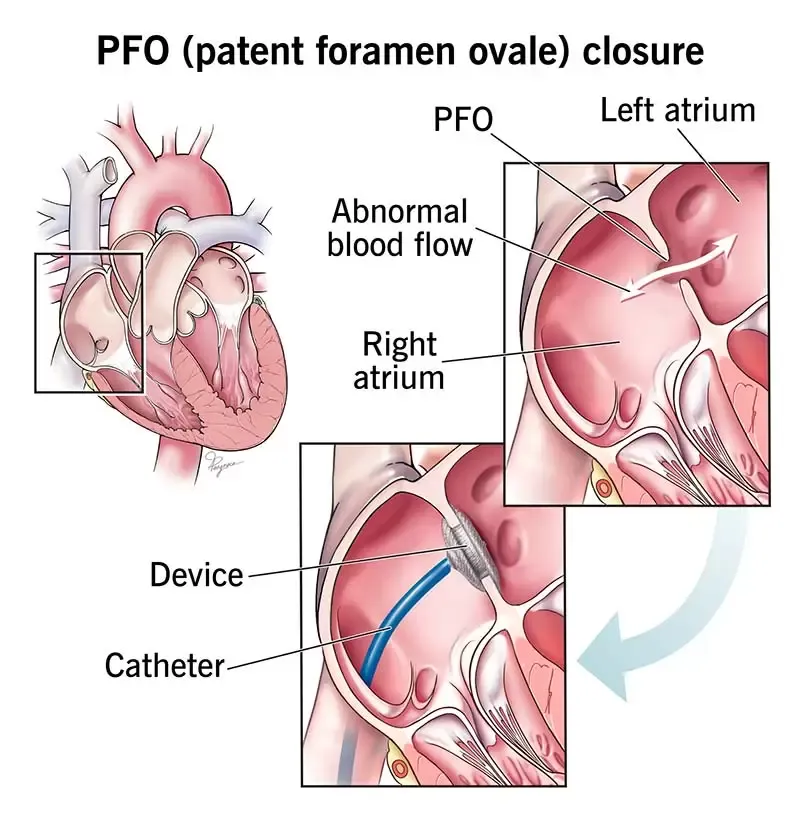

O que é o forame oval patente?
Antes de nascermos, os pulmões ainda não funcionam e o sangue precisa de um atalho dentro do coração. Esse atalho é o forame oval: uma abertura natural na parede que separa o átrio direito do átrio esquerdo, que permite ao sangue passar direto de um lado para o outro durante a vida fetal.
Com o primeiro choro e a entrada de ar nos pulmões, as pressões dentro do coração se invertem e essa "portinha" costuma se fechar. Em cerca de 25% das pessoas, porém, ela não se sela completamente e permanece como uma fresta. A isso damos o nome de forame oval patente — "patente" significa, aqui, "que permaneceu aberto".

Na maior parte do tempo essa fresta fica fechada, porque a pressão no lado esquerdo do coração é maior. Ela só se abre em momentos que aumentam a pressão no lado direito, como ao tossir, fazer força ou espirrar. É por isso que a grande maioria das pessoas com FOP vive a vida inteira sem nunca saber que o tem.
Os mitos e as verdades
O FOP carrega uma fama exagerada. Descobri-lo em um exame não significa, por si só, que exista um problema. Veja o que é boato e o que a ciência realmente mostra.
Os mitos
- "Todo FOP é perigoso e vai causar um AVC." Falso: para a grande maioria das pessoas, o FOP é inofensivo e nunca traz consequência alguma.
- "Todo FOP precisa ser fechado." Falso: apenas casos bem selecionados têm indicação de fechamento.
- "Achei um FOP no meu exame de rotina, preciso operar." Falso: um achado isolado, sem histórico de AVC, em geral não exige nenhum tratamento.
As verdades
- O FOP é muito comum: está presente em cerca de uma em cada quatro pessoas.
- Em situações específicas, ele pode se relacionar a um AVC de causa não explicada (o chamado AVC criptogênico), pelo mecanismo da embolia paradoxal.
- Quando o fechamento é indicado, ele é um procedimento minimamente invasivo, feito por cateter, sem cortar o peito.
FOP e AVC: a embolia paradoxal
É aqui que o FOP realmente importa. Em uma pequena parcela das pessoas, ele pode servir de caminho para um mecanismo chamado embolia paradoxal.
Normalmente, pequenos coágulos que se formam nas veias das pernas seguem para o lado direito do coração e são "filtrados" nos pulmões, sem chegar ao cérebro. Quando existe um FOP, porém, em um momento de aumento de pressão no lado direito (um espirro, um esforço), esse coágulo pode atravessar a fresta para o lado esquerdo, cair na circulação do corpo e chegar até uma artéria do cérebro, causando um AVC.
Chama-se "paradoxal" justamente porque o coágulo faz um trajeto que não deveria ser possível. Esse mecanismo ajuda a explicar por que alguns AVCs em pessoas jovens e sem os fatores de risco habituais (pressão alta, diabetes, colesterol elevado) ficam sem causa aparente. Nesses casos, chamados de AVC criptogênico, o FOP passa a ser um suspeito importante.
Importante
Ter um FOP não significa que você terá um AVC. A relação só ganha peso quando já ocorreu um AVC sem outra causa identificável, e o FOP é o provável responsável. É essa combinação que muda a conduta.
Quando o fechamento é indicado?
A decisão de fechar um FOP é sempre individualizada. Não se trata a imagem, e sim a pessoa. A principal indicação, hoje sustentada por grandes estudos clínicos, é:
- Adultos com menos de 60 anos que tiveram um AVC criptogênico (sem outra causa identificada) atribuído ao FOP.
- Situações em que a avaliação da equipe conclui que o FOP tem características de maior risco (por exemplo, um shunt volumoso ou associado a um aneurisma do septo).
Nesses cenários, os estudos mostraram que fechar o FOP reduz de forma consistente o risco de um novo AVC, quando comparado ao uso isolado de medicamentos.
A decisão é de uma equipe
A indicação do fechamento nasce da conversa entre neurologista e cardiologista, que investigam a fundo a causa do AVC e avaliam as características do FOP. O fechamento por rotina não é recomendado para quem apenas descobriu o FOP em um exame, nem para tratar enxaqueca fora de protocolos específicos.
Como é o fechamento por cateter?
Quando indicado, o fechamento do FOP é um procedimento minimamente invasivo, feito no laboratório de hemodinâmica, sem abrir o peito e sem parar o coração. Uma prótese de dois discos (uma espécie de "botão" duplo e flexível) é levada até o coração por um cateter e abre-se dos dois lados do septo, selando a comunicação.

Acesso pela veia
Um cateter fino sobe por uma veia da virilha (femoral) até o coração, sem cortes no peito.
Posicionamento
Guiada por imagem, a prótese compactada é levada através do forame, entre os dois átrios.
Fechamento
Os dois discos se abrem, um de cada lado, selam a passagem e ficam definitivamente no coração.
O procedimento costuma durar cerca de uma hora, é feito sob sedação ou anestesia leve e, na maioria das vezes, o paciente recebe alta já no dia seguinte, retomando as atividades habituais em poucos dias.
Depois do procedimento
A recuperação é rápida. Com o tempo, o próprio tecido do coração recobre a prótese, que se integra ao septo. As orientações mais comuns são:
- Uso de medicamentos antiplaquetários (por exemplo, aspirina e/ou clopidogrel) por um período, conforme a prescrição.
- Acompanhamento com o cardiologista e ecocardiogramas de controle.
- Retorno gradual às atividades e aos exercícios, seguindo a orientação da equipe.
Perguntas frequentes
Descobri que tenho um FOP. Devo me preocupar?
Na grande maioria das vezes, não. Um FOP encontrado por acaso, em alguém sem histórico de AVC, costuma ser apenas uma característica anatômica, sem qualquer consequência. A avaliação com um cardiologista ajuda a confirmar que não há motivo para preocupação.
O fechamento do FOP é uma cirurgia grande?
Não. É um procedimento minimamente invasivo, feito por cateter, sem abrir o peito e sem parar o coração. A internação geralmente é curta e a recuperação, rápida.
Tenho FOP e enxaqueca. Preciso fechar?
Fora de protocolos específicos, o fechamento do FOP não é indicado de rotina para tratar enxaqueca. Os estudos nesse cenário ainda são controversos, e a decisão exige uma avaliação individual com neurologista e cardiologista.
Vou precisar tomar remédio pelo resto da vida depois de fechar?
Em geral, usa-se um antiplaquetário por um período após o procedimento, conforme a prescrição. A duração e os medicamentos são definidos caso a caso pela equipe que acompanha você.
Referências
Este conteúdo foi útil? Compartilhe.
Ajude alguém a entender melhor o coração.